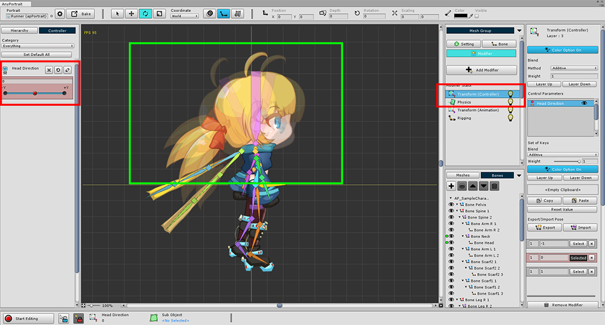
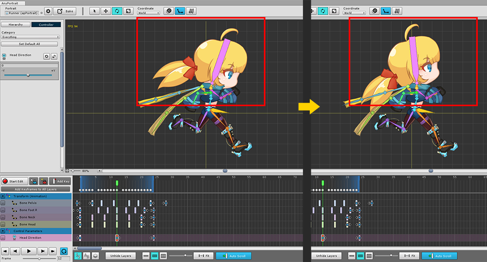
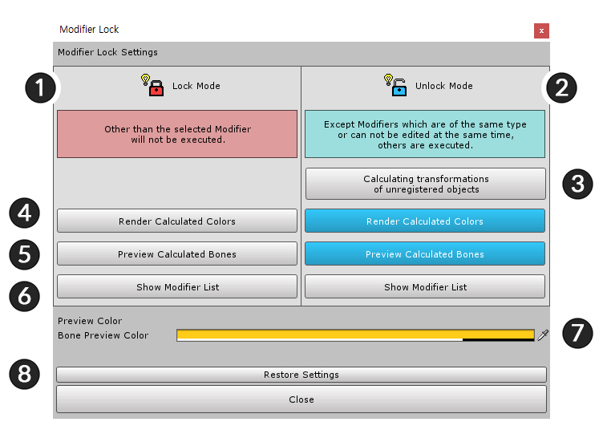
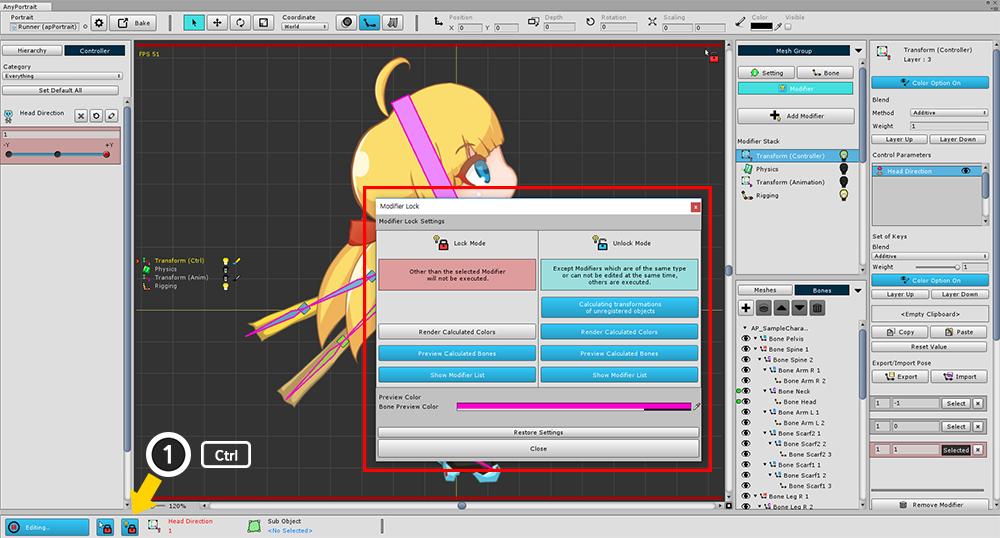

AnyPortrait > Manual > Advanced Settings of Modifier Lock
Advanced Settings of Modifier Lock
1.0.2
Note
This feature has been removed from AnyPortrait v1.3.0, and has been replaced by Edit Mode Options.
Registering and editing multiple modifiers is a feature of AnyPortrait.
However, modifying multiple modifiers at the same time can cause many problems.
Therefore, when you work, you are limited to modifying only one modifier.
In some cases, however, you can run multiple modifiers during editing.
The way to control this is called the Modifier Lock.
This page provides more information about the modifier locking feature.

As an example, we added the Transform (Controller) modifier to the existing tutorial.
This modifier moves the Head Bone and Neck Bone according to the control parameter.

Added control parameter timeline to animation.
Using the control parameter, we made the character look up as shown on the right.

Now let's edit the animation as usual.
(1) Turn on the edit mode, and (2) select the keyframe of Transform (Animation).
At this time, (3) the process of turning the head as shown in is ignored, and only the Transform (Animation) modifier is processed.
According to the modifier lock rule, other modifiers do not execute in edit mode.
Modifier Lock Rules
1. Lock Mode
- All modifiers other than the selected modifier will not be executed.
- The Rigging modifier is executed.
2. Unlock Mode
- The modifiers will be executed unless they are the same as the selected modifier or can not be edited at the same time.
- This is the case if it is a modifier of the same Transform series, or if it is a modifier of the same Morph series.
- If you select a modifier in the Transform series, the Physics modifier will be executed.
- The Rigging modifier is executed.

Let's open the advanced setting window of modifier lock.
(1) While holding down the Ctrl , click the Modifier Lock button. (On Mac OSX, this is the Command .)
(2) An advanced setting window for setting the modifier lock / unlock status appears.

Advanced settings of the modifier.
1. Lock Mode : This is the mode that the modifier is locked.
2. Unlock Mode : This is the mode with the modifier unlocked.
3. Calculating transformations of unregistered objects :
Objects that are not currently registered in the modifier you are editing do not need to be subject to the "modifier lock rule".
If you turn on this setting, all modifier calculations will proceed only for objects that are not registered.
4. Render Calculated Colors : Do not apply Modifier Lock rules to the Color property.
5. Preview Calculated Bones : Preview bones with all modifiers applied.
6. Show Modifier List :
The modifier list currently being processed is displayed on the left of the screen.
You can check the calculation status of the modifier.
7. Bone Preview Color : The color of the output when the "Preview Calculated Bones" property is on.
8. Restore Settings : Restores all settings to their default values.

Modifier lock setting changed.
You can set it up in a convenient way.
The settings are saved automatically.

If you activate the "Preview Calculated Bones" setting, this outline will be displayed additionally.
Since (1) the outline of the Head bone appears,
You can work out the final result that will appear as shown in the image on the right.

When you activate the "Show Modifier List" setting, a modifier list appears on the left of the screen.
The output is in the order of the modifier stack.
(1) The icon and name of the modifier. The modifier you are editing is printed in yellow on the left with a small cursor.
(2) The calculation state of the modifier.
If the modifier is running and is being applied to the operation of the object, the icon for the "lighted light bulb" appears.
If it is not running and locked, the "light bulb with no light" icon appears.
If it is only applied to some objects, a "slightly light bulb" icon appears.
(3) When the modifier determines the mesh color, it shows as an icon whether to operate the color property.
When locked, a black icon appears.

This is the list of modifiers after pressing the Modifier Lock button or pressing the D to switch the modifier lock state.
You can see that the modifiers do not run except for the Transform (Animation) modifier you are selecting.
(The Rigging modifier is running at the same time, and may differ slightly from the above screen depending on the Modifier Lock setting.)

You can call the setup window by clicking the same button (1) while holding down the Ctrl while editing the modifier of the mesh group as well as the animation.